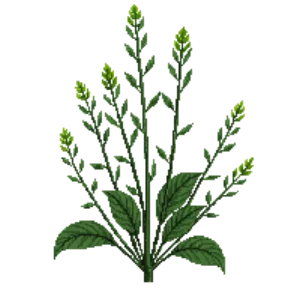

Silver Ponysfoot
Dichondra argentea

Silver Ponysfoot is a perennial for groundcover, suited to full sun to partial shade and loam, flowering varies by climate.
| Type | Perennial |
|---|---|
| Mature height | 8 cm |
| Spread | 90 cm |
| Aspect | full sun to partial shade |
| Foliage | Deciduous |
| Hardiness | USDA 8a-11b |
| Pollinator-friendly | No |
| Pet-safe | Yes |
Where to use it in a border
At around 8 cm, it sits best along the front edge, where a low, spreading habit reads best. Give it about 90 cm of room to spread. It is hardy across USDA zones 8a to 11b, so check it suits your area before planting.
It appears in our lists of full sun, pet-safe plants.
Flowering through the year
JFMAMJJASOND
Good companions
Plants that share its conditions and style, chosen to complement its place in the border:
- Autumn Sage 'Hot Lips'for height behind it
- Black Huckleberryto edge in front
- Bluebeardto flower when it does not
- Calamintto edge in front
- Catmint 'Cat's Pajamas'to edge in front
- Cigar Plantto edge in front
Garden styles
Foundation planting Wildlife garden Xeriscape (low-water)
See Silver Ponysfoot set in a full border, with spacing and companions worked out for your own conditions, in Border Builder.